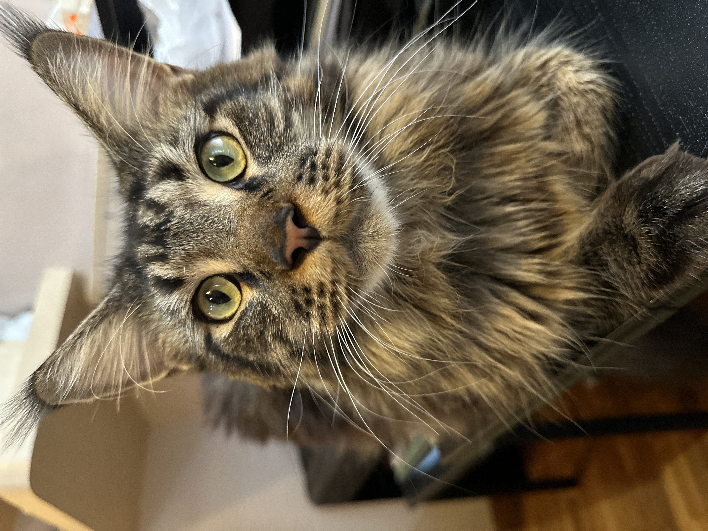

About My Pets
Things Bonya likes to do:
- Bark loudly when someone's at the door.
- Happily jump and make endless circles when one of us enter the house.
- Run to kitchen when she hears signs of feeding her.
Things Casper likes to do:
- Sleep all day long, snoring and making weird sounds.
- Cry as if he was not given food at least for 3 days when he is hungry.
- Walk with his fluffy tail up in a magestical way as if he owns the house.
Meet Them
Bonya - sweet and forever puppy eyed

Casper - brown and hairy "house ghost"

About owner
I love my babies, I have had many dogs in my life and this is my second cat as well.
Definately I am more of a cat person now but they are so adorable and different by character and as creatures.